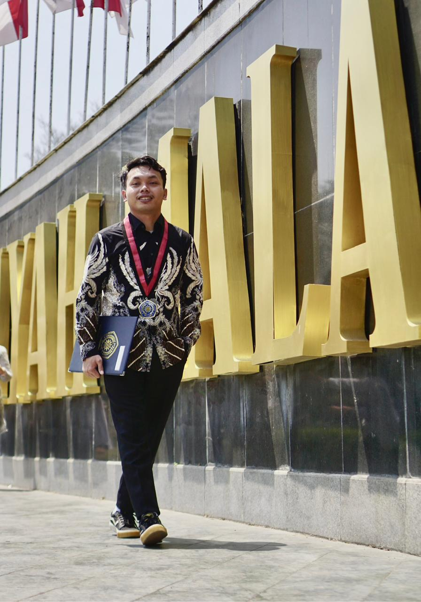

Saya Muhammad Rigel, kelahiran Gresik, 4 April 1996, saya lulusan S1 Universitas Muhammadiyah Malang Jurusan Teknik Mesin. Saya sendiri merupakan seorang yang sangat suka dengan tantangan dan hal - hal yang baru, dan ramah dengan orang baru, karena itu saya sangat mampu untuk bekerja sama dengan tim maupun individu.
Perjalanan saya dimulai dari bangku kuliah, saya mempelajari ilmu dasar tentang Teknik Mesin dan desain mekanikal melalui AutoCAD dan Inventor. Di sela kegiatan akademik, saya aktif mengasah kemampuan manajemen dan komunikasi dengan aktif di Organisasi internal maupun external dan mengadakan berbagai event musik serta kompetisi eSports di lingkup kampus maupun luar kampus.
Dan saat ini saya memberanikan diri terjun ke dunia profesional di PT. Sumber Jaya Grup sebagai administrasi. Di sela kesibukan mengelola administrasi operasional, saya menyadari bahwa efisiensi kerja adalah kunci di era digital ini. Hal itulah yang mendorong saya untuk mempelajari dunia IT dan pemrograman guna mengikuti perkembangan zaman.
Saat ini, saya aktif mengembangkan berbagai sistem otomasi dan aplikasi manajemen internal untuk membantu mendigitalisasi proses kerja manual agar menjadi lebih cepat, akurat, dan terintegrasi.

PT. Sumber Jaya Grup
Mengelola operasional agen LPG skala besar sekaligus mengembangkan sistem digital internal untuk efisiensi data. Bukti nyata bahwa saya paham kebutuhan bisnis, bukan cuma teknis.
Universitas Muhammadiyah Malang
Latar belakang teknik mesin melatih saya berpikir struktural dan berbasis solusi. Skill ini yang saya bawa ke setiap project coding saya.
Membangun sistem manajemen yang 100% fit dengan alur kerja bisnis Anda. Dari kasir, gudang, hingga dashboard eksekutif.
Biarkan 'robot' yang bekerja. Saya membuat bot (WA/Telegram) untuk handle tugas rutin agar Anda bisa fokus ke strategi bisnis.
Website bukan cuma pajangan. Saya bangun landing page yang estetis dan fungsional untuk menaikkan nilai jual brand Anda.